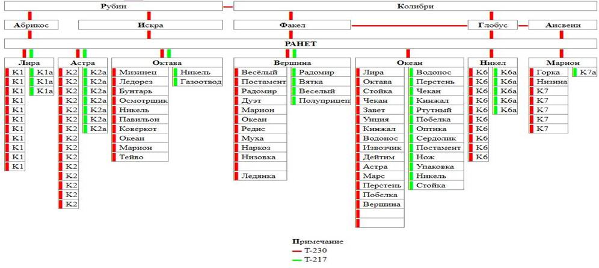
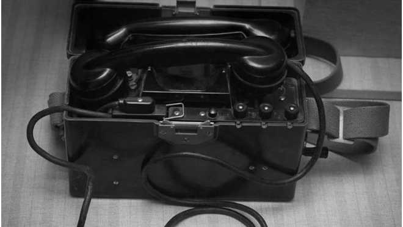
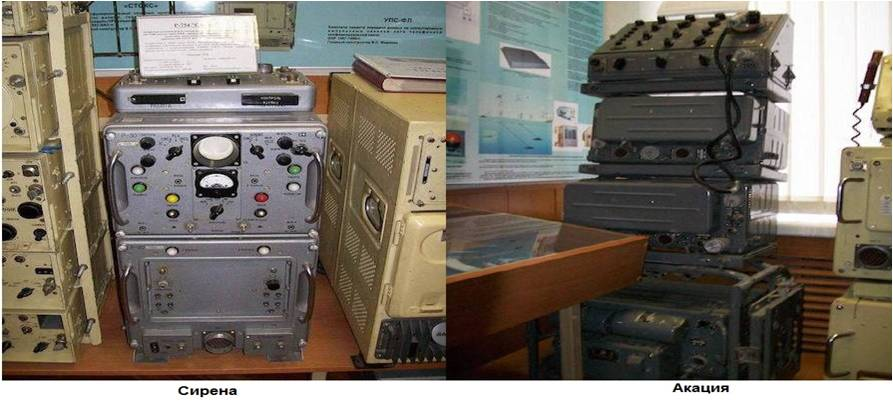
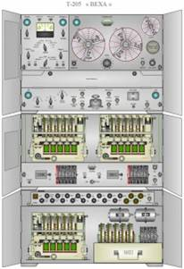

Системы секретной связи. Засекречивание сообщений
Картинка ниже показывает часть схемы по организации засекреченной связи между подразделениями с указанием позывных и мест дислокации абонентов.
Позывной «Рубин», например принадлежал ЦКП (центральный командный пункт) в Москве, «Абрикос» Львову и так далее.

Засекреченная связь – наиболее широко распространенный и оперативный вид скрытой связи. Она обеспечивается аппаратурой автоматического засекречивания информации (ЗАС) и предназначена для закрытия всего потока секретных и служебных сообщений, передаваемого по техническим средствам связи. Существует несколько видов засекречивающей аппаратуры, которые различаются по принципам шифрования, виду информации, подлежащей засекречиваю, криптографической стойкости. В настоящее время широко применяется засекречивающая телеграфная, фототелеграфная, телекодовая и телефонная аппаратура связи. Засекречивающая аппаратура по стойкости подразделяется на аппаратуру, обеспечивающую гарантированную и временную стойкость. Аппаратура гарантированной стойкости обеспечивает стойкость, при которой передаваемая информация не может быть раскрыта аналитическим методом.
Аппаратура временной стойкости обеспечивает такую стойкость, при которой в случае перехвата противником переданной информации, она в течение определенного времени может быть раскрыта аналитическим методом.
Эволюция систем ЗАС
По мере нарастания угрозы новой мировой войны в 1930-е годы руководство СССР осознало острую необходимость развёртывания научно-исследовательских и конструкторских работ в области техники связи. Широкомасштабный проект был незамедлительно начат, и поставленную задачу с «честью», ценой надломленных людских судеб, выполнили.
1930–1940 — первый этап. Было разработано аппаратуру засекречивания телефонных переговоров для коротковолновой связи. Этим занимался коллектив будущего академика Котельникова.
1941-1947 — второй этап. Были проведены первые НИОКР, выпущены малые серии аппаратуры, собраны коллективы разработчиков, которые занимались обслуживанием самой аппаратуры и развитием службы дешифрования.
В 1948 году была образована Марфинская лаборатория, что послужило началом третьего этапа. Целью данного этапа стала -разработка аппаратуры, которая обеспечила бы стойкость засекречивания переговоров по стандартному телефонному каналу. Коллективу Марфинской лаборатории предстояло решить, что и как построить без аналогов, впервые в мире и почти при полном отсутствии научного задела. К тому же выделенное для лаборатории здание бывшей духовной семинарии, а в 1930-е годы детской колонии МВД, находилось в крайне плохом состоянии и работать приходилось в очень трудных послевоенных условиях.
Отцу восточных и западных народов кто-то подсказал идею создать особую секретную телефонию — такую, чтобы никто никогда не мог бы понять, даже перехватив его телефонный разговор. К тому времени уже существовало несколько типов секретных телефонов, но ни один не мог удовлетворить взыскательный вкус Сталина.
Связь по ВЧ предохраняла только от прямого подслушивания. По проводам передавался ток высокой частоты, модулированный звуковыми сигналами от мембраны телефона. Подслушивающий воспринимал один лишь непрерывный писк. Но достаточно было подобрать фильтр для «отцеживания» высокой частоты, и разговор становился внятно слышен.
В годы Второй мировой войны появились более сложные системы — так называемой мозаичного шифрования. Звуковые сигналы делились частотными фильтрами на три или четыре полосы и с помощью магнитного звукозаписывающего диска дробились по времени на короткие доли — по сто-полтораста миллисекунд. А шифратор перемешивал эти частотно-временные отрезки. По телефонному проводу шло этакое крошево из визга и писка. На приёмном конце передачу расшифровывали и восстанавливали первоначальную речь.
Но ведь то же самое мог сделать и противник! Совершить это было довольно просто, обзаведясь нехитрым анализатором частот речевого сигнала — спектрометром.
Подавая на его вход слова, раздроблённые мозаичным шифратором, по спектрограмме можно было легко научиться выделять полосы применявшихся в шифраторе фильтров и временные доли, на которые разделялись зашифрованные сигналы. И заодно — читать спектрограммы зашифрованного речевого сигнала по слогам и по словам, медленно, но верно.
Вероятно, сведения о ненадёжности мозаичных шифраторов достигли уровня самого высокого руководства, поэтому в 1947 году Сталин и поставил перед советскими разработчиками шифровальной аппаратуры задачу изобрести такой телефон, чтобы на многие тысячи километров могла поддерживаться связь, абсолютно недоступная для любого рода подслушиваний.
C выходом Постановления Совмина СССР от 12 января 1952 года «О разработке аппаратуры для засекречивания телефонных переговоров» закончилась эпоха Марфинской лаборатории.
Был создан институт со штатом в 700 человек, получивший название ГосНИИ № 2 (НИИ Автоматики). По воспоминаниям, решение о создании НИИ-2 принял лично И.В. Сталин.
К первому периоду войны относится разработка портативной засекречивающей аппаратуры СИ-15 (Синица). Её аналог – Снегирь (САУ-16), исполненный в виде чемодана, использовался в основном при выездах командующих фронтами и представителей Ставки Верховного Главнокомандования в пункты, не имеющие ВЧ-станций.
Аппараты шифрования КВ радиотелефонных переговоров Соболь-П получили боевое крещение в конце 1942 году на линии связи Москва – Тбилиси, заменяя нарушенную немцами проводную связь со штабом Закавказского фронта. Эта радиосвязь была прекращена только после строительства новой линии проводной связи протяжённостью 1315 км, проходившей по пустынному побережью Каспийского моря.
Затем аппаратурой Соболь-П были оборудованы опытные магистральные радиотелефонные связи Москвы с Хабаровском и штабами 2 Украинского, 1 Белорусского и 2 Прибалтийского фронтов. По каналам связи, оборудованным аппаратурой Соболь-П разрешалась передача совершенно секретных донесений и приказов.
Для телефонной связи Ставки Верховного Главнокомандования с фронтами по коротковолновым каналам использовались шифраторы С-1, а по проводным – Сова и Нева.
Эти засекречивающие аппараты сложной схемы кодирования были предназначены для использования на всех высокочастотных каналах правительственной связи. Для тыловых каналов стационарной сети правительственной ВЧ-связи применялась засекречивающая аппаратура сложной схемы Волга-С. Аппаратура Нева работала на проводных линиях связи Москвы с 1 Белорусским и 2 Белорусским фронтами.
Эта техника засекречивания использовалась во время проведения Тегеранской, Ялтинской и Потсдамской конференций глав трёх стран. А также для связи с Москвой нашей делегации во время принятия капитуляции Германии в мае 1945 года.
Аппараты Соболь– II и Нева продолжительное время применялись на связи Москвы с Хельсинки, Парижем и Веной в период проведения переговоров по заключению мирных договоров после окончания Второй мировой войны.
Шифраторов Соболь-II было выпущено около полусотни экземпляров, а всего за 3 года войны и позднее в общей сложности на линиях связи использовались 2024 аппарата засекречивания, в основном типа инвертора спектра.
Виднейшие военачальники периода Отечественной войны Г.К. Жуков, И.С. Конев, И.Т. Пересыпкин, А.Е. Еременко, В.И. Чуйков в ряде публикаций говорят о хорошей работе правительственной связи.
Спецслужбой не зафиксировано фактов дешифрования переговоров, засекреченных сложной шифрующей отечественной аппаратурой.
Так, в послевоенные годы на связи Париж – Москва передачи с аппаратурой Соболь-II забивались помехами, а не перехватывались для дешифрования.

В середине 1950-х годов были созданы промышленные научно-исследовательские организации – ОКБ при заводе ВЭМ в Пензе и ОКБ при заводе КЭМЗ в Калуге, которые включились в процесс разработки и обеспечения промышленного выпуска аппаратуры криптографической защиты телефонных переговоров и телеграфной информации.
В 1968 году, совместно с НИИ-2, заводу предстояло изготовить первые 4 комплекта сложного технического комплекса для закрытия всех видов информации на магистральных линиях связи, в двух вариантах – подвижном и стационарном. Вначале был освоен выпуск модульных блоков, а с 1969 года – изделия в целом.
Для полевой сети правительственной связи был создан и внедрён ряд образцов аппаратуры как временной, так и гарантированной стойкости.
В 1960 годы в странах социалистического лагеря организуются свои сети правительственной связи. Для этого им передавались станции и аппаратура ВЧ-связи, а также аппаратура засекречивания, шифры для которой изготавливались в СССР и направлялись к местам назначения дипломатической почтой.
Несмотря на послевоенную разруху, в 1950 –1960 годы были получены новые результаты, способствовавшие прогрессу в разработке методов цифрового представления и кодирования речевых сигналов со всё меньшими скоростями передачи при сохранении разборчивости и натуральности на требуемом практикой связи уровне.
Последнее особенно актуально для аппаратуры засекречивания речи, которая неизбежно вносит в сигнал искажения при его шифрующих преобразованиях и последующей передаче по каналам связи.
В Пензе в 1958 году был образован дублер п/я 37 − НИИ-3, который с 1964 года был назначен головным предприятием разработки аппаратуры шифрования телеграфной информации и данных.
Шифровальные аппараты первого поколения, которые позволяли защищать информацию, передаваемую по телефонным и коротковолновым каналам связи: М-803-5, Лиана, Алмаз, Ландыш, Сирена, КУ-ЛС, Север-М, Лотос-В, Булава были созданы в 1950 1960 годах. Позже были разработаны специальные комплексы технических средств засекречивания связи и управления: Кавказ, Роса и Интерьер.

В общем то аппаратуру ЗАС времен СССР грубо можно было разделить на три большие группы, включающих в себя различные направления:
ЗАС телеграф, ЗАС телефония и шифровальные аппараты.
При использовании телефонии ЗАС сам канал связи (радио иле проводной) значения не имел.
